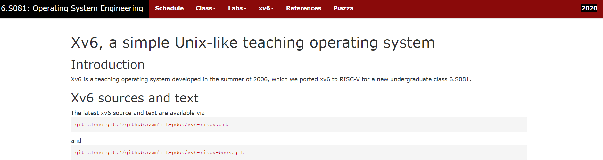

课程介绍
6.S081 Fall2020是麻省理工2020年秋季的操作系统课程，MIT将学习相关的资源全部公开并放到了官网。本课程中共涉及11个实验，需要花费一定时间来完成。由于是国外的课程，文档资料均为英文，为方便自己后续查阅和其他英文水平不足以流畅阅读英文文献的同学也能上手本课程，计划将资料全部翻译为中文。并分享课程笔记和实验记录。
由于水平有限，翻译中难免有错误或词不达意，还请见谅。

常用网址
- 课程官网：6.S081 Fall 2020
- 课程视频：6.S081--bilibili
- 视频翻译：6.S081课程翻译--gitbook
- 我的实验仓库：xv6-labs-2020--Github
GITBOOK浏览
更好的浏览体验，请查看6.S081-All-In-One-Gitbook(xv6.dgs.zone)
这些笔记开始时写在了飞书上，飞书不支持导出markdown，因此是从飞书上逐篇复制下来的，二者存在一些格式差异，我已经进行了修改，但仍然可能有部分没有注意到~